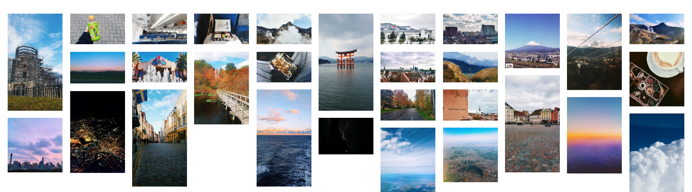

I'm a naturally eager person and didn't want to wait until grad school to start seriously studying the fairness material I'm interested in. In addition to compiling many of the papers I've read during the Microsoft FATE discussion group, I've organized a running repository of courses, textbooks, tutorials, etc. I'm studying to help keep track of my learnings & progress.
When my roommate and I secured a unit in a Park Slope brownstone, we decided to turn our moving experience into a project. While ideating, three distinct concepts began to emerge throughout the living space:
The end result is our smarthome, equipped with automated lighting/audio, on-demand weather and traffic updates, an app-controlled video doorbell, and all home devices connected to smart switches. Next, we're working on building a smart mirror and automated projector setup with surround sound.
This project was an extension of the NASA Datanauts Fall 2017 kick-off. I attended as a cohort alum to discuss my experiences in the program with the new Datanaut members. During the event, MindMakers held a workshop teaching binary & hardware. Attendees first encoded 2 bytes of data using ASCII codes before soldering together the 3D printed kit. I later decided I wanted to turn mine into a nightlight, so I attached it to a USB wall charger.
A quick exercise to generate twitter word clouds for a user's most frequent words using R and Twitter's API. Script is reproducible and on GitHub.
One of the largest contributions my education has afforded me is increased ability to travel, share my ideas, and learn from others around the globe. I keep a curated photo blog of my experiences at brianavecchione.vsco.co
